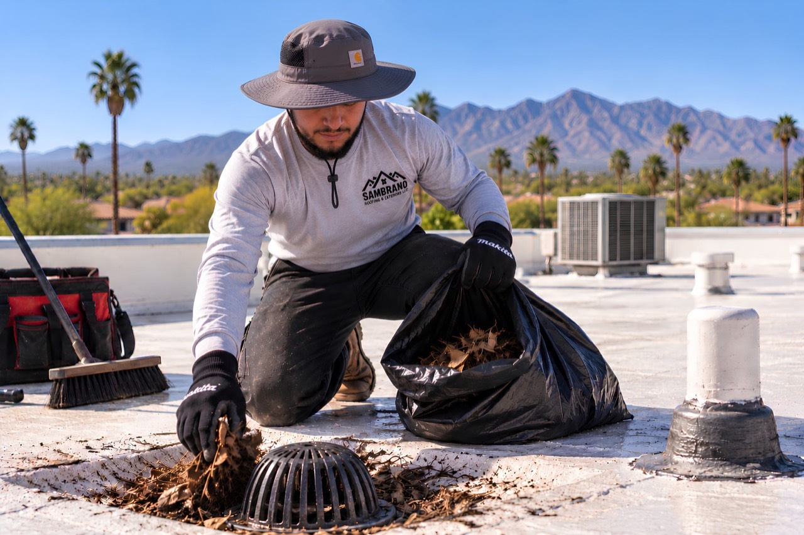
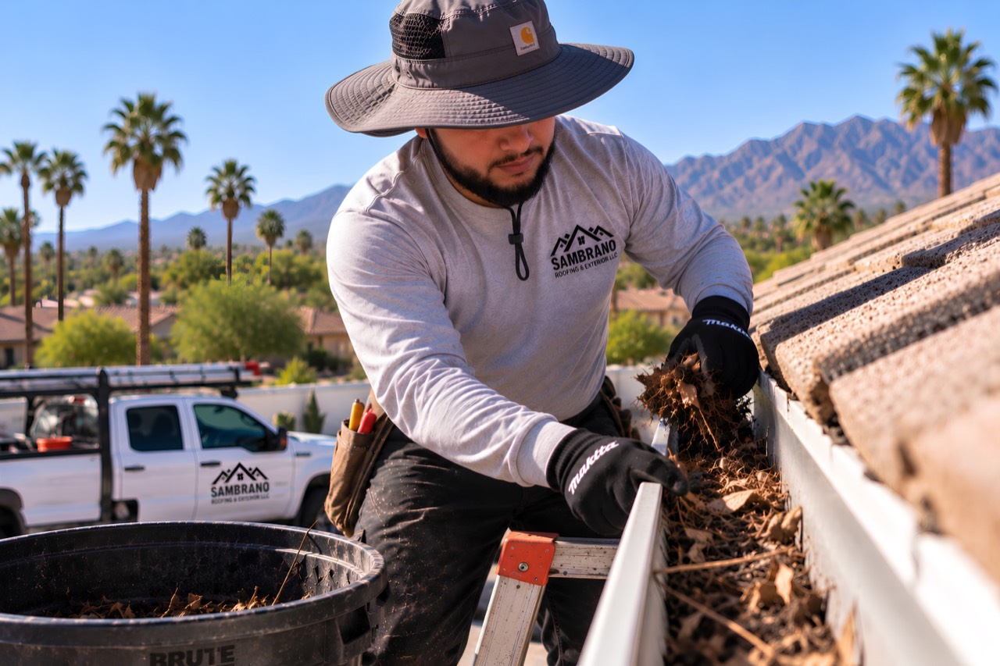

Regular inspection and upkeep — including drainage and gutters — helps catch small issues before Tucson's monsoon season turns them into bigger ones.
A roof takes on constant, cumulative stress from Arizona's sun, heat, and monsoon storms — even when nothing looks obviously wrong from the ground. Regular maintenance is about catching small, developing issues while they're still small, rather than finding out about them during an active leak.
Constant sun exposure gradually degrades roofing materials, coatings, and sealants over time.
A pre-monsoon check can catch developing issues before wind-driven rain finds them for you.
Leaves, seed pods, and other debris can accumulate on a roof and in gutters and drains between visits, affecting how well water moves off the roof.
Water needs a clear path off the roof. Gutters, downspouts, and roof drains that are clogged with debris can cause water to back up rather than drain away, which increases the amount of time water sits in contact with the roofing material and surrounding transitions.
Clearing leaves, seed pods, and debris from gutters and downspouts so rainwater moves away from your roof and foundation the way it's supposed to. This is handled as part of a maintenance visit, not billed as a separate standalone service.
On flat and low-slope roofs, we check drainage points for debris buildup that could interfere with how the roof sheds water, particularly ahead of monsoon season.
We inspect the roofing surface, flashing, and penetrations for visible wear, cracking, or developing issues.
Leaves, seed pods, and other debris are cleared from the roof surface, gutters, and drainage points.
We confirm gutters, downspouts, and roof drains or scuppers are moving water away from the roof as intended.
Anything worth watching — a developing crack, early coating wear, a soft spot — is noted and explained, even if it doesn't need immediate repair.
If something does need attention, we explain what we found and what the options are — see Roof Repairs for how that's scoped.

Clearing debris from a roof drain

Clearing debris from a gutter
A visual inspection of the roofing surface, flashing, and penetrations; checking drainage points and gutters for debris; and noting any developing issues so small problems can be addressed before they become larger ones.
Intense UV exposure and monsoon storms both put repeated stress on a roof over the course of a year. Catching wear, debris buildup, or minor damage before monsoon season can help prevent it from becoming an active leak during a storm.
Clogged gutters and drainage points can cause water to back up onto the roof instead of draining away, which can contribute to damage over time. Clearing debris from gutters and drains is part of a general maintenance visit, not a separate service.
At least once a year is a reasonable baseline for most roofs, with an additional check after a significant storm. The right frequency can depend on the roof's age, material, and condition, which is something we can discuss during an inspection.
No. Maintenance is about catching developing issues early. If an inspection finds damage that needs to be repaired, that's addressed as its own scope of work, not folded into a routine maintenance visit.
For more on ponding water, drainage, and scuppers, see our Roofing Knowledge Center. If an inspection finds active damage, see Roof Repairs or Leak Repairs.
Due for a check-up before monsoon season? Let's take a look before it becomes a problem.